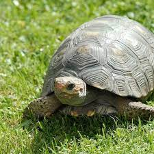
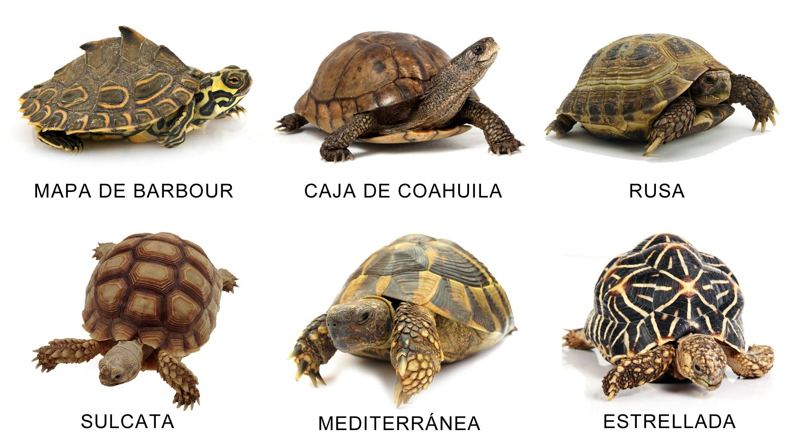

|  | Tortugas terrestres |
Tortugas terrestresLas tortugas terrestres son unos animales muy curiosos, que ocupan un lugar especial en muchos hogares. Cada vez forman más parte de nuestra vida como mascotas. Aquí tienes unas características y cuidados de las tortugas terrestres. Aprende más sobre uno de los reptiles milenarios más antiguos del planeta. Las tortugas terrestres son reptiles tranquilos y muy pacíficos que cada vez encuentran mayor aceptación como mascotas. Existen muchas especies diferentes: Tortuga Mediterránea o Tortuga de Hermann, Tortuga Estrellada (Geochelone radiata), Tortuga Rusa (Agrionemys horsfieldii), Tortuga Argentina (Geochelone chilensis)... Esta última es una especie protegida en peligro de extinción y está prohibida su venta. Rasgos físicos de la tortuga terrestreLas tortugas terrestres son reptiles poseen un caparazón dorsal formado por placas perfectamente estructuradas y compactas que se une al plastrón (parte inferior de la coraza) a través de una pasarela lateral. Es imposible separar una tortuga de su caparazón, ya que las costillas están unidas a este último. A pesar de no tener dientes, es conveniente tener cuidado con su mordedura, ya que poseen una boca puntiaguda compuesta por una membrana muy dura y unas mandíbulas muy fuertes. Por otra parte, su cuello es muy largo y flexible, pueden estirarlo o encogerlo rápidamente cuando lo deseen. En condiciones óptimas pueden llegar a vivir muchos años. De media suelen alcanzar los 50-60 años, pero no es raro que lleguen hasta los 80 o incluso los superen. Alimentación de la tortuga terrestreLa tortuga terrestre es un animal principalmente herbívoro. Su dieta debe ser lo más variada posible, manteniendo una proporción del 90% de vegetales y 10% de frutas. El calcio y el fósforo son elementos muy importantes en la alimentación de la tortuga terrestre, ya que de ellos está compuesto su caparazón y los necesita para mantenerlo fuerte y sano. Hay que tener en cuenta la proporción entre ambos elementos: son más adecuados los alimentos con más calcio que fósforo (higos secos, espinacas, hojas de brócoli, diente de león, acelga, perejil...). Esto no significa que no pueda comer otros vegetales (tomate, lechuga, zanahoria, pepino o calabacín) y frutas (manzana, melón...). Para los cuidados de una tortuga terrestre lo mejor es ofrecerle una dieta completa que incluya todos estos alimentos. Pueden acostumbrarse a comer alimentos preparados en forma de pellets, o insectos como las larvas de mosquito. Deben comer varias veces al día en pequeñas raciones ya que tienen un metabolismo muy lento. Es importante que la comida y el agua estén a temperatura ambiente. Los vegetales deben estar bien limpios y libres de herbicidas o pesticidas. Lo mejor es servirlos picados y mezclados. Algunas plantas son tóxicas, como la azalea, por lo que hay que procurar que no pueda acceder a ellas.

|
|